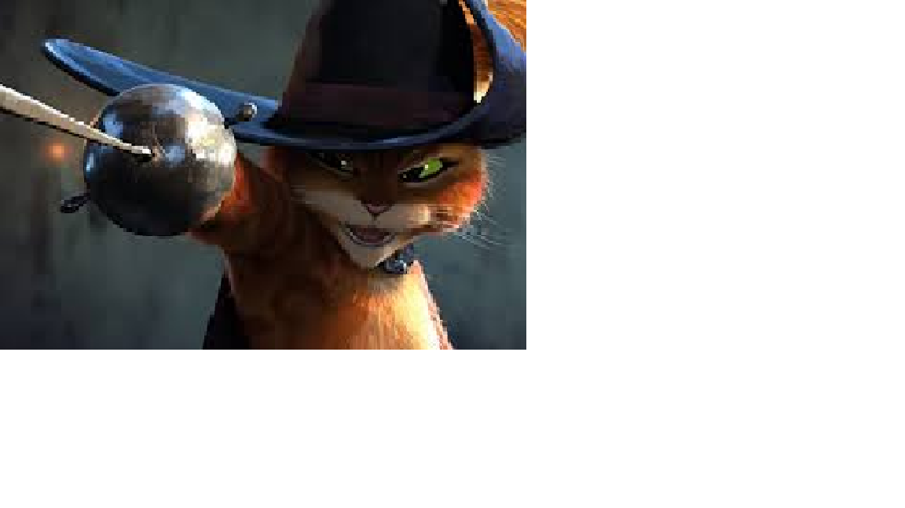
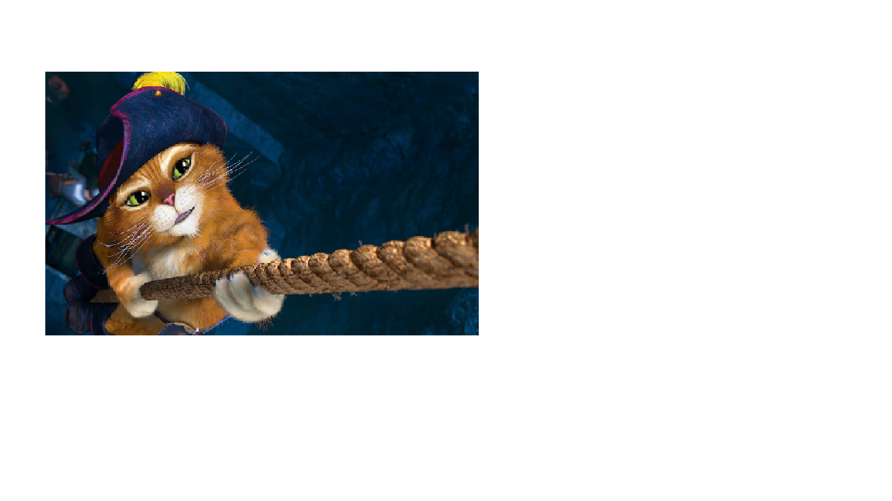

El Gato con Botas es la historia de un gato que, a cambio de un saco y unas botas, ayuda a su amo, un joven molinero pobre, a convertirse en un príncipe rico y a casarse con la hija del rey. El gato engaña a los campesinos, al rey y a un ogro, a quien finalmente devora tras hacerlo transformarse en ratón. Gracias a su astucia, el joven molinero gana la mano de la princesa y el gato se convierte en su caballero y vivirá en el castillo.
La herencia y el plan: Un molinero fallece y deja como herencia a su hijo menor un gato. El joven se desanima, pero el gato le pide un saco y unas botas para poder ayudarle a salir de la pobreza y convertirse en un hombre rico. Los regalos para el rey: El gato, con sus nuevas botas, atrapa un conejo y otras presas, a las que presenta al rey como regalos del "Marqués de Carabas", el amo del gato. Esto hace que el rey se impresione y se interese por el misterioso marqués. El engaño del río: El gato se entera de que el rey va a pasear en carruaje por la orilla del río. Le pide a su amo que se meta en el agua, le dice que se quite la ropa y la esconde. Cuando el carruaje del rey se acerca, el gato grita que el "Marqués de Carabas" se está ahogando. La fortuna del amo: El rey ordena a sus hombres que rescaten al joven y le den ropas finas. La princesa se enamora del apuesto molinero, quien ahora parece un verdadero príncipe. El castillo y el ogro: El gato se adelanta al rey y convence a los campesinos de los campos que digan que las tierras pertenecen al Marqués de Carabas, haciendo que el rey crea que su amo es muy rico. Luego, llega al castillo de un ogro, lo engaña para que se transforme en un animal pequeño y lo devora. El final feliz: Con el castillo del ogro ahora a nombre del Marqués de Carabas, el rey invita al joven a casarse con su hija. Se casan y viven felices, mientras el gato se convierte en un noble caballero que vive en el castillo.
 